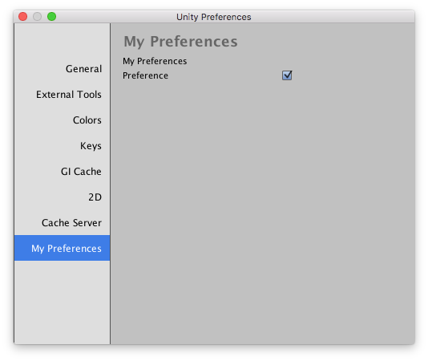

Preferences
You can add your own settings tab in the unity preferences dialog. This is the right place to store settings for your custom Unity editor extentions.

using UnityEngine;
using UnityEditor;
public static class MyPreferences
{
[PreferenceItem("My Preferences")]
private static void OnPreferencesGUI()
{
GUILayout.Label("My Preferences");
var preference = EditorPrefs.GetBool("MyPreferecesPreference", defaultValue: false);
preference = EditorGUILayout.Toggle(label: "Preference", value: preference);
EditorPrefs.SetBool("MyPreferecesPreference", preference);
}
}
Appart from using EditorPrefs you can also store your custom settings in an asset with an ScriptableObject. Keep in mind that the settings you edit inside an preference UI should only be for editor tools, like for example when you make a custom build extention for unity that lets you do special stuff when building a game. The advantage of using EditorPrefs is that your settings will be shared will all projects for your editor. Like all the other settings in the preference window.
You should not put gameplay specific things in a preference UI.